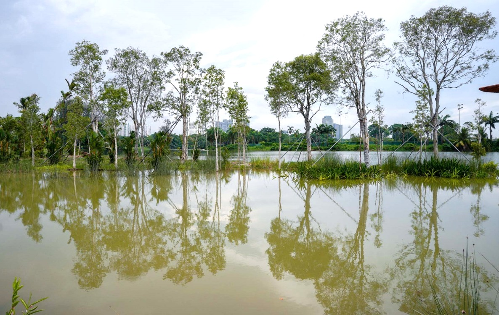
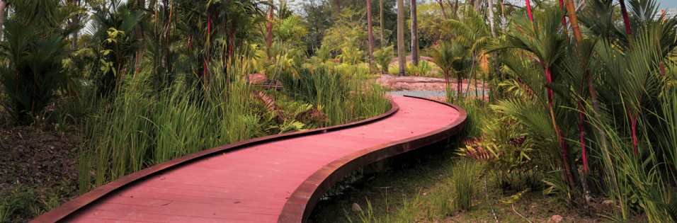
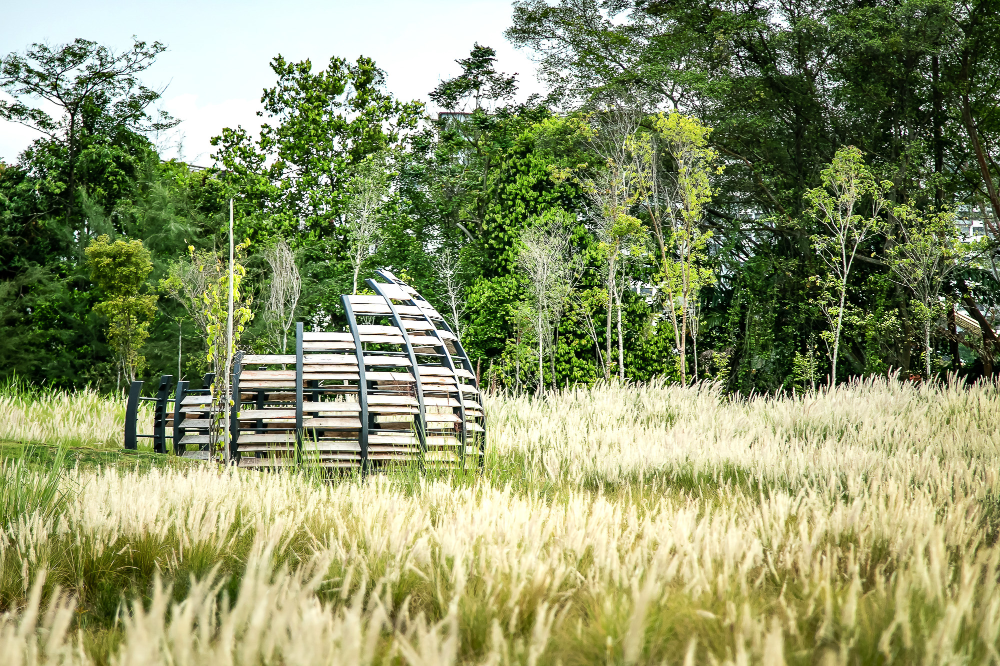
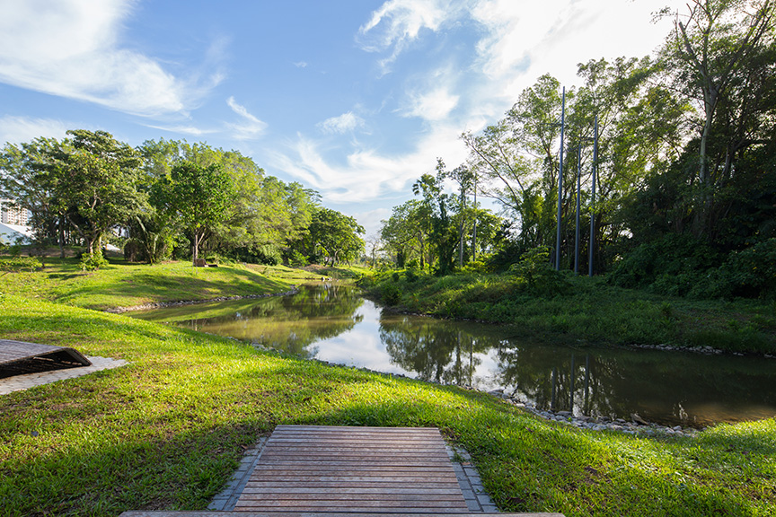

Explore nature spaces!
1. Alstonia Island & Freshwater Swamp Forest

Explore the natural history of Jurong Lake!
Alstonia Island is named after the dominant tree species, Alstoniaspatulata, planted on the island.
Commonly known as Marsh Pulai, this species has adapted to survive and grow in areas that are constantly flooded. The island has conditions similar to that of a freshwater swamp, as it is constantly flooded.
The Freshwater Swamp forest is a habitat that is rich in biodiversity, teeming with plants and animals that are unique to it. The flora and fauna of the forest have adapted to cope with constant flooding.
For example, some plants have evolved unique root systems such as Xylopiafusca and Alstoniapneumatophora.
2. Rasau Walk

A Meandering Walk along the water's edge!
A meandering boardwalk along the water’s edge, Rasau Walk enables visitors to get up close with nature.
Plants along Rasau Walk thrive in the riparian zone, where parts of certain plants are constantly submerged underwater.
Many of these plant species have evolved mechanisms that allow them to cope with constant inundation.
3. Grasslands

Take a stroll in fields of gold at the Grasslands!
Dominated by tall grasses, Grasslands are an important habitat for many small bird species that feed on grass seeds and seek shelter in the grass.
Grasslands also house the Lone trees that is sculptured and made from recycled iron.
Lone Tree stands tall amongst the grasses. It is a sculpture inspired by the industrial origins of Jurong,
and is made from recycled iron reinforcement bars salvaged from old park pathways.
The sculpture forms a feature point that punctuates the expanse of the grasslands.
Its branches offer an unobstructed view of the grasslands, making it an ideal perch for raptors such as the Brahminy Kite (Haliastur indus).
4. Neram Streams

Get close to the shallow waters of the streams!
A partnership with Temasek to improve livability and sustainability in Singapore has led to us relooking our built environment
and exploring features that complement the natural environment. Now called Neram Streams, they channel stormwater runoff from the surrounding gardens.
The stormwater is cleansed by plantings in the streams and eventually flows into Jurong Lake, one of Singapore’s 17 reservoirs.
Guided walks along the trail provide opportunities for visitors to learn about the area’s rich biodiversity,
and to get close to the shallow waters of the streams.